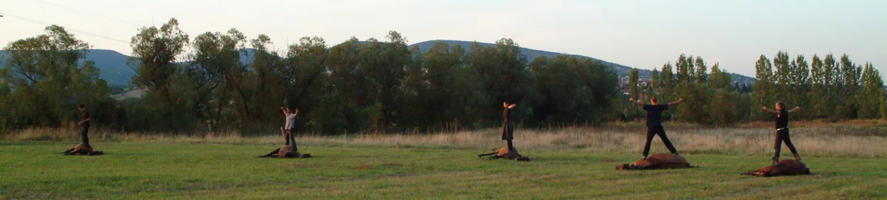

***
*** ***... Magyar viszonylatban tehát e fegyver használatának szerves része a ló, amely ugyanolyan fontos összetevője az egységnek, mint maga az íjász. Ezt a minőséget is kifejező egységet röviden és tömören így nevezzük: LOVASÍJÁSZ.
A lovasíjász nem lóra szállt gyalogos. Lótartó, lóértő, lovas (nagyállattartó) életmódot folytató, fegyverek használatára, valamint lovas alkalmazására kiképzett lovas harcos.
A ló és az ember különleges lelki-szellemi kapcsolatban állnak.
A ló érzékeny az ember érzelmeinek, gondolatainak kisugárzására. Ezek hatnak rá. Az az ember pedig, aki tisztában van a rész és az egész viszonyával, aki érti és a szavak nélküli párbeszéd szintjén képes működtetni az egymás képességeinek kiegészítésén alapuló sajátos kapcsolatokat élőlények között, esélyt kap arra, hogy életre keltse és megtapasztalja a tökéletesség egységét, az egység tökéletességét. A lovas ugyanis fizikai és szellemi síkok harmóniája, a tökéletesség szimbóluma.
Műveltségünk, benne a magyar harci kultúra alapja. ...
LOVAS NEMZET LÓ NÉLKÜL
Lovas: lóval egységet alkotó, egységben együttműködő ember.
Lovas ember: lótartó, lovat vagy lovakat birtokló, lóval vagy lovakkal együtt élő és tevékenykedő, lovas életmódot folytató ember.
Lovas nemzet: ???Sajnálatos, hogy a magyar lovas kultúra a XX. század második felére teljesen megsemmisült. Kicserélődött nemzetidegen szemlélettel, lóhasználattal és eszközökkel. Lóállományunk is teljesen megváltozott. Magyar lovaink, melyekre egykor méltán büszkék voltunk,* eltűntek a szemünk elől. A "fejlett" Nyugat-Európától pedig végre elleshettük a lovaglás, a lótartás tudományát, valamint azt, hogy hogyan is néz ki egy ló.
Ez az állapot feladatot adott számomra. Meghatározta továbbá a lovas hagyományőrzők egyik fő tevékenységi körét is, annak ellenére, hogy döntő többségük e problémáról egyáltalán nem vesz tudomást. Értékeink megőrzése céljából rendkívül fontosnak tartom a magyar lovaskultúra feltámasztását. Ennek megvalósulásáért hosszú ideje aktívan dolgozom.Nyilvánvaló vált, hogy a XX. század végén Magyarországon és Európában általánosan megszokott méretű sport- és hobbilovak minden szempontból alkalmatlanok a cél megvalósítására. Az ilyen lovak mozgatásához alkalmazott eszközök és módszerek szintén.
Munkámhoz tehát korhű megjelenésű és mozgású lovakat választottam és képeztem ki.
A keresett típusba tartozó lovak és a fegyverek használata azonban speciális lovaglástechnikát igényelt.
Mivel a lovas mozgása minden esetben a ló mozgását egészíti ki, sajátosságait pedig a célszerűség alakítja, nem volt sok lehetőség a technika elemeinek összeválogatására. Egészen pontosan csak egyetlenegy. Ezt a lovaglási technikát összehasonlítottam a világ lovasainak mozgásanyagával és egyéb modern kori kísérletekkel, melynek eredményeként egyértelművé vált, hogy megtaláltam a hagyományos magyar lovaglás alapvető stílusát. Ezt a korabeli ábrázolások, leírások vizsgálata, illetve a technika használhatósága és hatásfoka teljes mértékben igazolta. ...